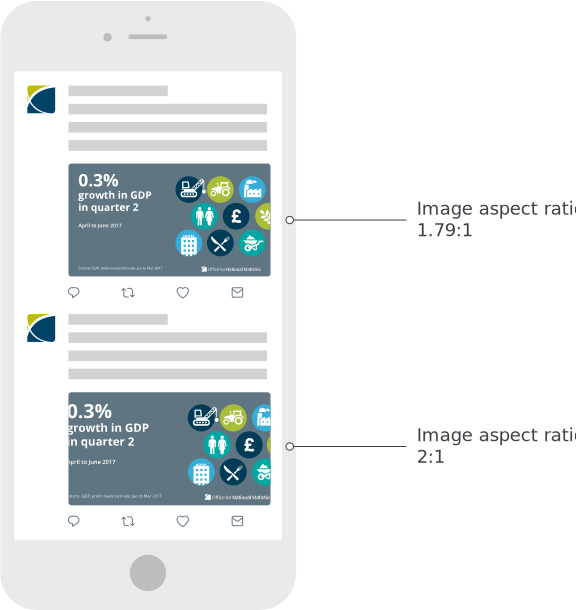

Choosing the correct pixel dimensions for your image.
The optimal size of a twitter graphic is 1024px wide by 573px high (aspect ratio of 1.79:1). This will ensure graphics appear consistently on mobile, tablet and desktop.
Posting an image with a different will result in the image being cropped on mobile. This isn't ideal when posting infographics and data visualisations as important information could be hidden from view within the feed.
The diagram below illustrates how a graphic with a 2:1 aspect ratio will resize to fill the vertical space while cropping the left and right edge.
A square graphic will behave in a similar fashion on mobile, scaling to fill the width of the image area while cropping the graphic on the top and bottom edge.